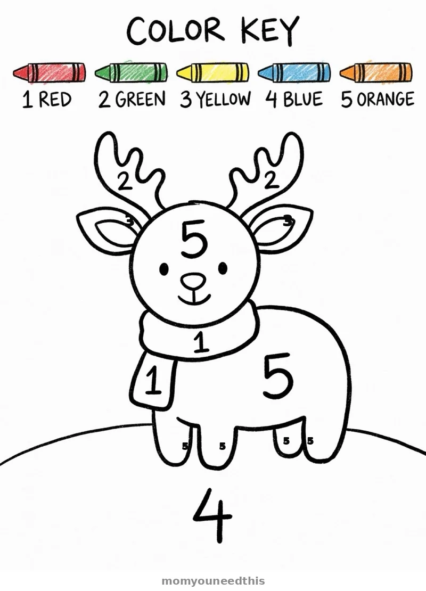

Reindeer Paint by Numbers Free Color-by-Number Printable, Ages 3+
Quick Answer
This free reindeer paint by numbers printable is made for ages 3 and up: big numbered sections, large clear numbers, and just 4 colors on the shared color key. The finished picture is a cute reindeer with green antlers, a red scarf, and blue snow under its hooves. One thing to know before you start: this sheet's key skips the number 3 — the reindeer's colors are 1, 2, 4 and 5, so no section is marked 3.
At a Glance
- Activity: Reindeer Paint by Numbers
- Ages: 3+
- Colors: 4 (1 = Red, 2 = Green, 4 = Blue, 5 = Orange)
- Sections: Extra-large, numbered
- Supplies: Printed sheet + crayons
- Time: ~15 min

🎨 Color Key for This Sheet
This sheet uses 4 colors from the shared key. The numbers mean the same thing on every sheet — 1 is always red, 2 is always green, and so on.
| Number | Color | What it colors |
|---|---|---|
| 1 | Red | scarf |
| 2 | Green | antlers |
| 4 | Blue | snow ground |
| 5 | Orange | head and body |
This sheet uses only 4 colors — no yellow — which makes it the easiest of the set.
🖍️ How to Color This Sheet
- Set out the crayons. Only the 4 colors this sheet uses — red, green, blue and orange. Leave the yellow in the box: this key has no 3, and fewer choices means a faster start.
- Point at the key together. “1 is red” — find the scarf and hold the red crayon over it. The scarf is a friendly medium section, and one demo there teaches the whole game.
- Let them work in any order. All the 2s first and grow the antlers, or save the scarf for last — both are correct. The rule is just: number matches color.
- Say the numbers and colors out loud. “That's a 4 — blue, snow!” turns each section into a tiny number-and-color quiz.
🧠 What Kids Learn From This Reindeer Sheet
The reindeer teaches the find-match-fill loop on an animal, and animals add something the shapes and objects do not: parts with names. Antlers, scarf, hooves, snow — each section belongs to a body part or a piece of the scene, so the coloring doubles as vocabulary. A child who finishes this sheet can point to antlers and know the word, which is more than most coloring pages deliver.
The antlers are the sheet's signature challenge. They branch — literally — into more sections than any other part, in green, of all colors. Children have to track thin, splitting shapes and keep the crayon inside them, which is the finest motor work in this set of sheets. The scarf and the snow, big and simple, provide the rest breaks between antler efforts.
And the key skips 3 — this picture needed red, green, blue and orange, so its numbers are 1, 2, 4 and 5. A child who hunts for a 3 and reports there are none has read the key correctly and trusted their own checking.
🎨 Make It Your Own
The color key is a starting point, not a rule. Once your child has colored the reindeer the “right” way — green antlers and all — print another copy and let them stable a wild one: a pink reindeer, a reindeer with a rainbow scarf, antlers in gold. The green antlers are already gloriously unrealistic, so this sheet gives children permission to go further.
One classic variation deserves a try: give the wild reindeer a red nose. He is not drawn with one in the key version — adding it turns him into a very specific reindeer indeed, and children who know the song will insist on it.
🖍️ More Paint by Numbers Sheets
Try another sheet — same color key, new picture.
👨👩👧 A Quiet Activity That Actually Works
The reindeer is built for December's quiet pockets: the half hour before dinner guests arrive, the wind-down after a busy party day, the morning a child wakes up too excited about the season to settle to anything loud. One page, four crayons, and a character who assembles piece by piece — antlers last is the connoisseur's order — hold attention without winding anyone up.
Finished reindeer tend to be kept. He has a face, a scarf and a personality, and children name him. Print a copy for the fridge and one for a grandparent's card; if your child colors the whole Christmas set across December, the reindeer is usually the one they ask to redo first.
❓ Reindeer Paint by Numbers FAQs
How does the reindeer paint by numbers sheet work?
Each section of the reindeer picture has a number. Match the number to the color key (1 = Red, 2 = Green, 4 = Blue, 5 = Orange), pick up that crayon, and color the section. The scarf is red (1), the antlers are green (2), the snow is blue (4), and the reindeer's body is orange (5). Note that this sheet has no number 3 — its key uses only four colors.
What age can kids do this reindeer paint by numbers sheet?
Ages 3 and up. This sheet uses 4 colors and extra-large numbered sections, so preschoolers can manage it. The antlers branch into the thinnest sections in the set — a younger child may want a sharper crayon or a little help there, while the body, scarf and snow are big and forgiving.
Is this reindeer paint by numbers printable free?
Yes — completely free, no signup or email required. Download the PDF, print it, and color it as many times as you like. Finished reindeer make sweet homemade Christmas cards.
📚 Keep Exploring
- 🎨 All Paint by Numbers Sheets 8 free color-by-number printables for kids.
- ✏️ Drawing Tutorials 76 free step-by-step drawing tutorials for kids.
- 🎁 Free Resources Free printables and resources for busy moms.